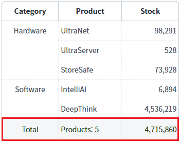
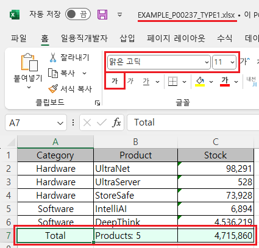
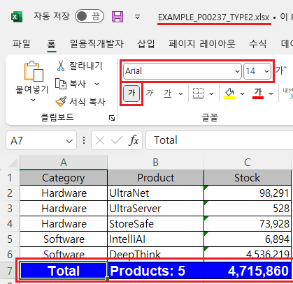

GridView의 'advancedExcelDownload' 메소드를 사용하여, 엑셀 다운로드 시 푸터 컬럼에 스타일을 설정한 예제입니다.
'advancedExcelDownload' 메소드의 첫 번째 인자인 JSON 객체에 설정할 수 있는 푸터 컬럼의 스타일 속성은 다음과 같습니다.
footerColor : <String:N> [default: #008000] Excel 파일에서 그리드의 footer의 배경색
footerFontName : <String:N> [default: 없음] Excel 파일에서 그리드의 footer의 font name
footerFontSize : <String:N> Excel 파일에서 그리드의 footer의 font size
footerFontColor : <String:N> [default: 없음] Excel 파일에서 그리드의 footer의 font 색
footerFontBold : <String:N> [default: 없음] Excel 파일에서 그리드의 footer의 Bold 설정 유무
이 기능은 'advancedExcelDownload' 메소드의 첫 번째 인자 JSON의 'useStyle' 속성을 'false'로 설정해야합니다.
엑셀 다운로드 - 기본 동작
엑셀 다운로드 - 푸터의 스타일 설정
다운로드된 엑셀 파일의 푸터 영역의 스타일을 비교합니다.
1
STEP 1: 초기 상태 확인하기
GridView에 푸터(footer)가 설정되어 있습니다.
Image 1.브라우저(Chrome) 실행 예시

2
STEP 2: '엑셀 다운로드 - 기본 동작' 버튼을 클릭합니다.
'EXAMPLE_P00237_TYPE1.xlsx' 파일이 다운로드 됩니다.
3
STEP 3: 실행된 결과를 확인합니다.
다운로드 된 'EXAMPLE_P00237_TYPE1.xlsx' 파일을 실행합니다. 푸터터 영역의 스타일을 확인합니다. (배경색, 글자체, 글자 크기, 글자색, 글자 굵게 설정 여부) 배경색을 제외한 나머지 설정은 엑셀에 설정된 기본 값으로 설정됩니다.
Image 2.다운로드된 엑셀(2021) 파일 예시

1
STEP 1: 초기 상태 확인하기
GridView에 푸터(footer)가 설정되어 있습니다.
Image 3.브라우저(Chrome) 실행 예시
2
STEP 2: '엑셀 다운로드 - 기본 동작' 버튼을 클릭합니다.
'EXAMPLE_P00237_TYPE2.xlsx' 파일이 다운로드 됩니다.
3
STEP 3: 실행된 결과를 확인합니다.
다운로드 된 'EXAMPLE_P00237_TYPE2.xlsx' 파일을 실행합니다. 푸터 영역의 스타일을 확인합니다. - 배경색 : "blue" - 글자체 : "Arial" - 글자 크기 : "14" - 글자색 : "white" - 글자 굵게 설정 : "true"
Image 4.다운로드된 엑셀(2021) 파일 예시

1
'advancedExcelDownload' 메소드를 사용하여 설정합니다.
Example 1.Script
//예제 파일의 스크립트 "scwin.btn_ex2_onclick"를 참고하세요. var jsnOptions = { fileName: "EXAMPLE_P00237_TYPE2.xlsx", //엑셀의 파일명 useStyle : "false", //필수 설정 footerColor : "blue", //푸터의 배경색 (Green) footerFontName : "Arial", //푸터의 글자체 footerFontSize : "14", //푸터의 글자 크기 footerFontColor : "white", //푸터의 글자색 (White) footerFontBold : "true" //푸터의 글자 굵게 설정 }; //options.usefooter : <String:N> [default: false, true] 다운로드시 footer을 출력 할지 여부. //options.useStyle <String:N> [default: false] 다운로드시 css를 제외한, style을 excel에도 설정할 지 여부 (배경색,폰트) //options.footerColor : <String:N> [default: #CCFFCC] Excel 파일에서 그리드의 footer의 배경색 //options.footerFontName : <String:N> [default: 없음] Excel 파일에서 그리드의 footer의 font name //options.footerFontSize : <String:N> Excel 파일에서 그리드의 footer의 font size //options.footerFontColor : <String:N> [default: 없음] Excel 파일에서 그리드의 footer의 font 색 //options.footerFontBold : <String:N> [default: 없음] Excel 파일에서 그리드의 footer의 Bold 설정 유무 //GridView "grd_exam1"의 엑셀 다운로드 실행 grd_exam1.advancedExcelDownload(jsnOptions);
advancedExcelDownload( options , infoArr )
options.footerColor
options.footerFontName
options.footerFontSize
options.footerFontColor
options.footerFontBold